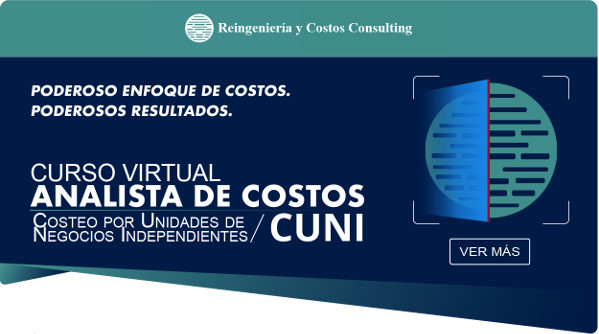

|  | ||
¡Hola!Bienvenido(a) al Curso!Estamos viviendo en un entorno de alta incertidumbre y constantes cambios. Ésta realidad nos obliga a tomar decisiones con información, que muchas veces, no refleja los costos reales de la empresa. Generalmente en nuestro medio trabajan con costos mal enfocados y se hacen asignaciones deficientes que distorsionan la verdadera rentabilidad de los bienes o servicios producidos induciendo a un error en la toma de decisiones. El Curso Virtual ANALISTA DE COSTOS CUNI / Enfocado al Costeo por Unidades de Negocios Independientes, tiene como objetivo en capacitar a los participantes en este instrumento de Gestión Estratégica de Costos con el objetivo de brindar información sustentada y precisa para la toma de decisiones. Ésta herramienta utiliza el Costeo ABC y el Análisis Costo-Beneficio, realizando un profundo análisis de los costos enfocado en las Unidades de Negocios Independientes, permitiéndole descubrir en su empresa una serie de procesos costosos, ineficientes e innecesarios que con métodos simples de costeo no es posible observar. Cualquiera sea la actividad de su organización sea esta de servicios, industrial, educativa, comercial, institución del estado, etc. Éste poderoso enfoque de Costos le permitirá mejorar dramáticamente la información de costos de su organización mejorando notablemente la toma de decisiones gerenciales. |
||
|
||
Más sobre el curso |
||

|
||
Reingenieria y Costos Consulting / Líderes en costeo estratégico
Ésta información se envía de acuerdo a la legislación sobre correo electrónico. Referencia: Ley 28493, 29246 y su reglamento, aprobado por DS 031-2005-MTC. Éste correo no podrá ser considerado SPAM mientras incluya una forma de ser eliminado. La libre distribución de este e-mail está autorizada por tratarse de propósitos de información, sin embargo puede solicitar su remoción de la lista, la cual será aceptada y tramitada en un máximo de 48 horas. Si desea eliminar su dirección de correo de nuestra lista de envíos, haga click aquí.